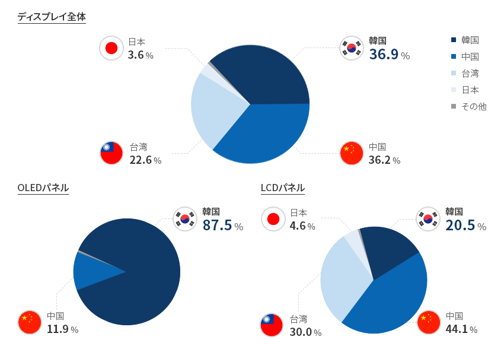
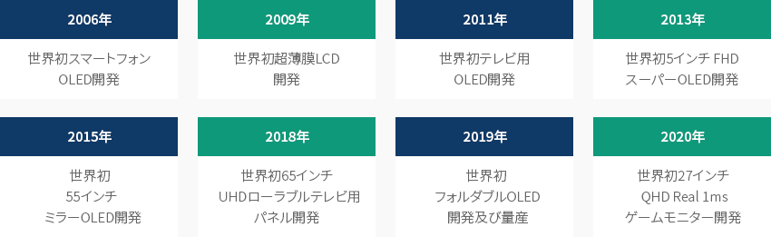
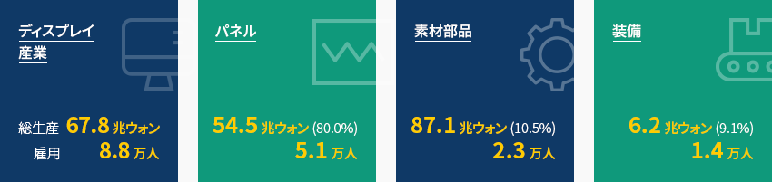
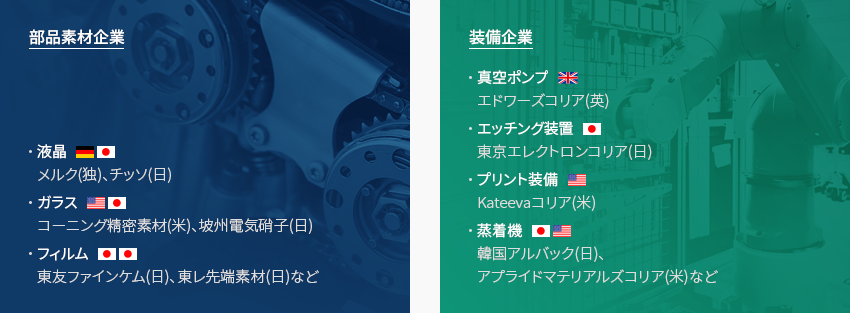
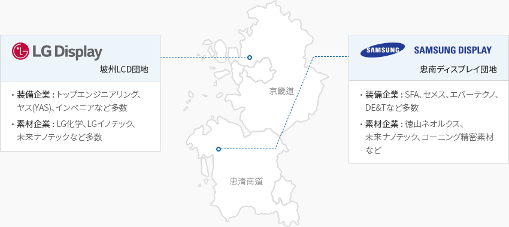

ディスプレイ
- Home
- Why KOREA
- 産業
- ディスプレイ
ディスプレイ
Display
-
韓国、世界ディスプレイ市場シェア1位 コンテンツを閉じる韓国、 世界ディスプレイ市場シェア1位2020年基準で世界ディスプレイ市場シェアは韓国36.9%、中国36.2%、台湾22.6%、日本3.6%で、
韓国が17年連続世界1位を維持している。特に次世代ディスプレイと呼ばれるOLED(有機EL)市場では韓国が87.5%を占め、
グローバル市場をリードしている。高付加価値OLEDはフォルダブルフォン、ローラブルテレビなどの革新製品製造において中核的な役割を担っている。
特に、サムスンディスプレイは中小型OLED分野で世界1位であり、LGディスプレイは大型OLED分野の世界1位を維持している。
LCDは韓国企業が高付加価値OLEDへの切り替えを進め生産を縮小したことで、2018年に世界トップの座を中国に明け渡した。
サムスンディスプレイとLGディスプレイ両社とも、OLEDの生産拡大のために戦略的にLCD生産を減らしている状況である。「2020年世界ディスプレイ市場シェア(金額基準)」 ※ 출저 : OMDIA 2021韓国は世界ディスプレイ市場のみならず技術分野においても持続的な技術開発を通じて次世代技術をリードしている。
※ 출저 : OMDIA 2021韓国は世界ディスプレイ市場のみならず技術分野においても持続的な技術開発を通じて次世代技術をリードしている。
世界初のスマートフォンOLED(2006)、世界初のOLED(2011)、世界初のフォルダブルOLED(2019)などの革新技術は、どれも韓国が世界で初めて開発しており、
韓国のOLED生産の技術力は競争国より約3∼5年先をいっている。「次世代ディスプレイ技術先導国」- 2006年 - 世界初スマートフォンOLED開発
- 2009年 - 世界初超薄膜LCD開発
- 2011年 - 世界初テレビ用OLED開発
- 2013年 - 世界初5インチ FHDスーパーOLED開
- 2015年 - 世界初55インチミラーOLED開発
- 2018年 - 世界初65インチUHDローラブルテレビ用 パネル開発
- 2019年 - 世界初フォルダブルOLED開発及び量産
- 2020年 - 世界初27インチQHD Real 1msゲームモニター開発
-
韓国ディスプレイの 健全な素材、部品、装備生態系 コンテンツを開く韓国ディスプレイの 健全な素材、部品、装備生態系韓国のディスプレイ産業は、サムスンディスプレイ、LGディスプレイを中心にしたパネルを生産する装備企業376社と
製造工程に使われる素材・部品メーカー681社で構成されている。韓国ディスプレイ産業の総生産額は67.8兆ウォンで、パネル54.5兆オン(80%)、
素材・部品7.1兆ウォン(10.5%)、装備6.2兆ウォン(9.1%)で構成されている。雇用は合計8.8万人で、パネル5.1万人、素材・部品2.3万人、
装備1.4万人である。最近、韓国のディスプレイ産業はLCDからOLED(有機EL)に転換され、OLED分野の雇用が増加している。
輸出構造は、ディスプレイモジュール工場とテレビ、携帯電話などのセットメーカーが位置するベトナムや中国への輸出がほとんどで、
ベトナムへの輸出が53%、中国への輸出が38%である。「韓国ディスプレイの健全な素材、部品、装備生態系」- ディスプレイ産業 - 총생산 67.8兆ウォン, 雇用 8.8万人
- パネル - 54.5兆ウォン(80.0%), 5.1万人
- 素材部品 - 87.1兆ウォン(10.5%), 2.3万人
- 装備 - 6.2兆ウォン(9.1%), 1.4万人
(単位 : 億ドル、%、$)ディスプレイ生産現状 区分, 年 ※ 出所 : 半導体産業協会、ディスプレイ産業協会、情報通信産業振興院資料 -
素材分野 外国人投資企業の韓国進出事例 コンテンツを開く素材分野 外国人投資企業の韓国進出事例東友ファインケムは住友化学の技術に基づいて1991年、韓国に進出し、韓国のディスプレイ企業にフォトレジスト、
タッチセンサーパネルなどの中核素材を供給してきた。平澤、益山、三箕の3つの生産工場を運営しており、平澤、益山に技術研究所まで設立し、
フレキシブル素材などの次世代化学素材に対する研究開発を進めている。2020年の売上は2兆4,700億ウォンで従業員は約2,700人である。コーニング精密素材は1995年にサムスンとコーニングの合弁で韓国に設立され、LCD生産の中核素材となるガラスを韓国企業に供給してきた。
1996年、亀尾事業場で初の製品を生産して以来、2002年には天安事業場を完成して事業場を拡大していった。また、韓国工場で
生産したLCD用ガラスを中国にも輸出しており、輸出金額は持続的に増加している状況である。2020年の売上は1兆4,430億ウォンで
従業員は約2500人である。
-
R&D及び 施設投資に対する税額控除 コンテンツを開くR&D及び 施設投資に対する税額控除韓国政府はディスプレイ分野の研究人材開発費、施設投資に対して税額控除などの支援制度を運営している。AMOLED(アクティブマトリクス式有機EL)、
マイクロLED、量子ドット(QD:Quantum Dot)など7つの技術及び施設が指定されており、それに対するR&Dと施設投資が行われれば
投資額の一部に対して税額控除を適用している。パネルだけでなく、それと関連した素材、部品、装備すべてに該当するため、中小・中堅企業で
多数利用している制度の一つである。R&D及び 施設投資に対する税額控除 区分, ディスプレイ分野の新成長オリジナル技術の税額控除対象技術 区分 ディスプレイ分野の新成長オリジナル技術の税額控除対象技術 1 9インチ以上のAMOLED(アクティブマトリクス式有機EL)パネルの機能改善及び部品ㆍ素材ㆍ装備製造技術 2 大気圧プラズマエッチング装備技術 3 フレキシブルディスプレイパネルㆍ部品ㆍ素材ㆍ装備製造技術 4 次世代自動車用ディスプレイパネルㆍ部品ㆍ素材ㆍ装備製造技術 5 マイクロLEDディスプレイパネルㆍ部品ㆍ素材ㆍ装備製造技術 6 VRㆍARㆍMR用ディスプレイパネルㆍ部品ㆍ素材ㆍ装備製造技術 7 環境配慮型量子ドット(QD:Quantum Dot)ナノ素材適用ディスプレイパネルㆍ部品ㆍ素材ㆍ装備製造技術 需給円滑化のための関税割当支援韓国政府は産業競争力の強化及び物資の需給円滑化などのために関税割当制度を運営している。関税割当は価格の安定、需給の円滑化などの
ために、基本関税率を40%p範囲の比率で引き下げて一時的に適用する弾力関税制度である。6ヵ月または1年ごとに需要調査を
行い関税割当対象品目を選定しており、ディスプレイ産業もパネル生産に必要な製造装備及び素材、部品に対して関税割当
支援を受けている。 -
ディスプレイ クラスターの現状 コンテンツを開くディスプレイ クラスターの現状韓国のディスプレイパネル生産地域は1995年以降2004年まで器興、天安、亀尾が中心だったが、生産ラインの拡大過程で
サムスンディスプレイが位置する忠清南道とLGディスプレイが所在する坡州を中心にクラスターが形成された。
LCDとOLED(有機EL)関連の部品・素材企業のクラスターは、サムスンディスプレイとLGディスプレイが新規ラインをそれぞれ京畿道坡州と忠清南道湯井に
設けたことから、この二地域を中心に構築されている状況だ。パネルメーカーとともに関連素材や部品、装備企業も加わりクラスターを形成することになった。坡州クラスターにはトップエンジニアリング、
インべニア、LG化学、LGイノテックなどがあり、忠南クラスターにはSFA、DE&T、徳山ネオルクス、コーニング精密素材など、
多数の素材・部品・装備企業が位置している。「ディスプレイ産業クラスター」パネルメーカーを中心に装備・材料企業の産業拠点を形成LGディスプレイ - 坡州LCD団地- 装備企業 : トップエンジニアリング、ヤス(YAS)、インベニアなど多数
- 素材企業 : LG化学、LGイノテック、未来ナノテックなど多数
サムスンディスプレイ - 忠南ディスプレイ団地- 装備企業 : SFA、セメス、エバーテクノ、DE&Tなど多数
- 素材企業 : 徳山ネオルクス、未来ナノテック、コーニング精密素材など
坡州ディスプレイクラスター坡州ディスプレイクラスターにはLGディスプレイがある。LGディスプレイは大型テレビ用LCD及びOLED(有機EL)パネルを生産しており、
第7世代工場、第8世代工場をはじめ、OLED生産ライン、モジュール工場を運営している。港湾と空港が周辺にあるため、
生産品の90%以上の輸出が可能であり、便利な交通ネットワークが構築されている。ソウル税関の議政府出張所が坡州ディスプレイ産業団地に位置しており輸入通関時間を30分以内に短縮し、輸出入通関手続きと時間の
節約も可能である。また、首都圏に近いことから首都圏大学から優秀な人材の供給が可能で、周辺大学との協約及び特性化高校の指定などにより
地元での人材供給も円滑といえる。忠南ディスプレイクラスター忠清南道にはパネルメーカーのサムスンディスプレイを中心に多数の素材・部品・装備企業が位置している。韓国のディスプレイ産業の約50%以上、
世界ディスプレイ産業の約25%以上を生産しているディスプレイ分野の先導地域である。ディスプレイ支援センターの構築などの自治体の支援があり、
牙山・湯井などの地域には1980年代以降、約35の大学が移転してくるなど優秀な研究開発の基盤となる力量を保有している。また、KTX駅があるため、
ソウルや釜山、光州などの都市部へも迅速に移動でき、輸出入のための平澤港までは30kmの近距離なので物流費の削減も可能である。「主要ディスプレイクラスターの地理的現状」主要ディスプレイクラスターの地理的現状 区分, 坡州, 忠清南道 区分 坡州 忠清南道 仁川空港間距離 50km 164km 港 50km (仁川) 30km (平澤、唐津) ソウル 35km 85km ソウル駅 60分 (自動車、鉄道) 34分 (KTX), 90分 (自動車) 用水 八堂ダム 大清ダム 周辺都市 一山 天安牙山 ※ 資料：韓国ディスプレイ産業協会


Invest KOREA
半導体/ティスプレイPM
パク・ドンユル
基幹産業誘致チーム
T.+82-2-3460-7726
おすすめの立地情報
産業団地情報
[Chungcheongnam-do Asan City] Asan 2nd Techno Valley General Industrial
Complex
Click [Go to Detailed Information] to go to the relevant information screen of
Smart K-Factory service of Industrial Complex Corporation.
-
Complex nameAsan 2nd Techno Valley General Industrial Complex
-
Initial designation date2010.12.28
-
Designated area(m2)1,200,443
-
ManagementChungcheongnam-do Asan City
-
Nearby RailwayPyeongtaek Station
-
Distance from station(km)13
-
Nearby AirportCheongju International Airport
-
Distance from airport(km)60
-
Industrial water Supply capacity(ton/day)3915(㎥/day)
-
Affiliation local governmentChungcheongnam-do Asan City
-
Population313,871
産業団地情報
[Gyeonggi-do Paju City] Sinchon General Industrial Complex
Click [Go to Detailed Information] to go to the relevant information screen of
Smart K-Factory service of Industrial Complex Corporation.
-
Complex nameSinchon General Industrial Complex
-
Initial designation date2007.10.01
-
Designated area(m2)189,797
-
ManagementGyeonggi-do Paju City
-
Nearby RailwayHaengsin Station
-
Distance from station(km)27
-
Nearby AirportGimpo International Airport
-
Distance from airport(km)30
-
Industrial water Supply capacity(ton/day)233(㎥/day)
-
Affiliation local governmentGyeonggi-do Paju City
-
Population459,158
産業団地情報
[Gyeonggi-do Paju City] Tanhyeon General Industrial Complex
Click [Go to Detailed Information] to go to the relevant information screen of
Smart K-Factory service of Industrial Complex Corporation.
-
Complex nameTanhyeon General Industrial Complex
-
Initial designation date2000.12.19
-
Designated area(m2)122,871
-
ManagementGyeonggi-do Paju City
-
Nearby RailwayMunsan Station
-
Distance from station(km)8
-
Nearby AirportGimpo International Airport
-
Distance from airport(km)37
-
Industrial water Supply capacity(ton/day)-
-
Affiliation local governmentGyeonggi-do Paju City
-
Population459,158
産業団地情報
[Chungcheongnam-do Asan City] Sinchang Agricultural Industrial
Complex
Click [Go to Detailed Information] to go to the relevant information screen of
Smart K-Factory service of Industrial Complex Corporation.
-
Complex nameSinchang Agricultural Industrial Complex
-
Initial designation date1987.08.20
-
Designated area(m2)56,040
-
ManagementChungcheongnam-do Asan City
-
Nearby RailwayShinchang Station
-
Distance from station(km)4
-
Nearby AirportCheongju International Airport
-
Distance from airport(km)59
-
Industrial water Supply capacity(ton/day)-
-
Affiliation local governmentChungcheongnam-do Asan City
-
Population313,871
産業団地情報
[Gyeongsangbok-do Gumi City] Gumi National Industrial Complex (2,3,4,
Expansion Complex)
Click [Go to Detailed Information] to go to the relevant information screen of
Smart K-Factory service of Industrial Complex Corporation.
-
Complex nameGumi National Industrial Complex (2,3,4, Expansion Complex)
-
Initial designation date1977.04.22
-
Designated area(m2)16,651,936
-
ManagementKorea Industrial Complex Corporation
-
Nearby RailwayGumi Station
-
Distance from station(km)11
-
Nearby AirportDaegu International Airport
-
Distance from airport(km)51
-
Industrial water Supply capacity(ton/day)72327
-
Affiliation local governmentGyeongsangbok-do Gumi City
-
Population416,551
産業団地情報
[Chungcheongbuk-do Jeungpyeong County] Jeungpyeong 2nd General Industrial
Complex
Click [Go to Detailed Information] to go to the relevant information screen of
Smart K-Factory service of Industrial Complex Corporation.
-
Complex nameJeungpyeong 2nd General Industrial Complex
-
Initial designation date2009.11.20
-
Designated area(m2)702,807
-
ManagementChungcheongbuk-do Jeungpyeong County
-
Nearby RailwayJeungpyeong Station
-
Distance from station(km)6
-
Nearby AirportCheongju International Airport
-
Distance from airport(km)17
-
Industrial water Supply capacity(ton/day)3,348(㎥/day)
-
Affiliation local governmentChungcheongbuk-do Jeungpyeong County
-
Population81,949